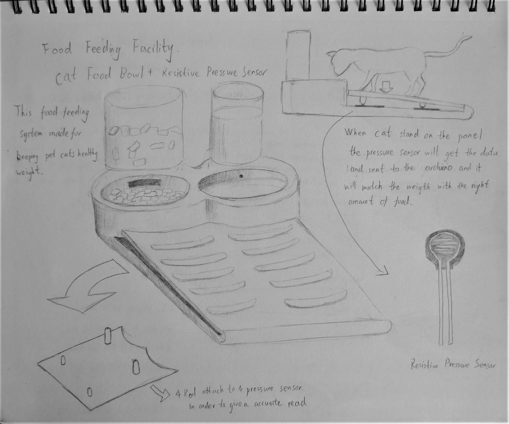
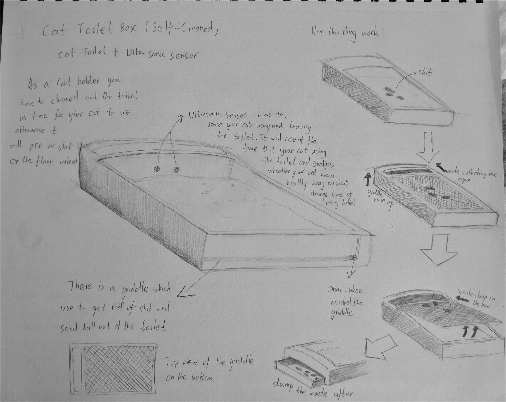
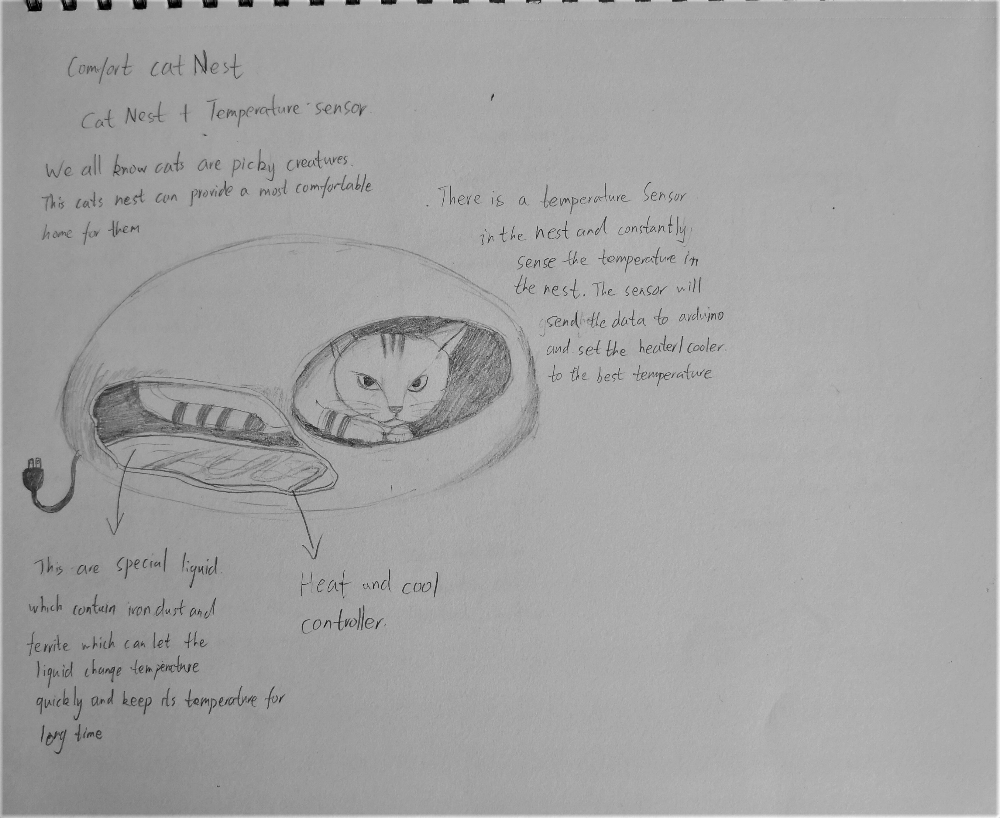
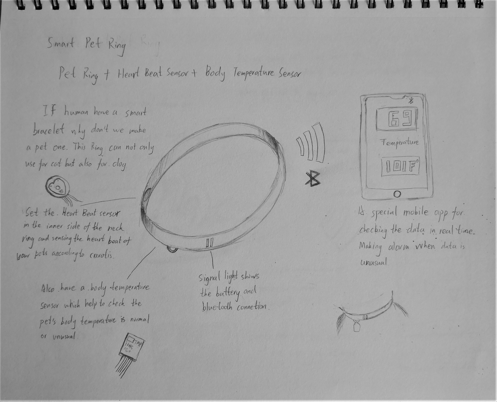
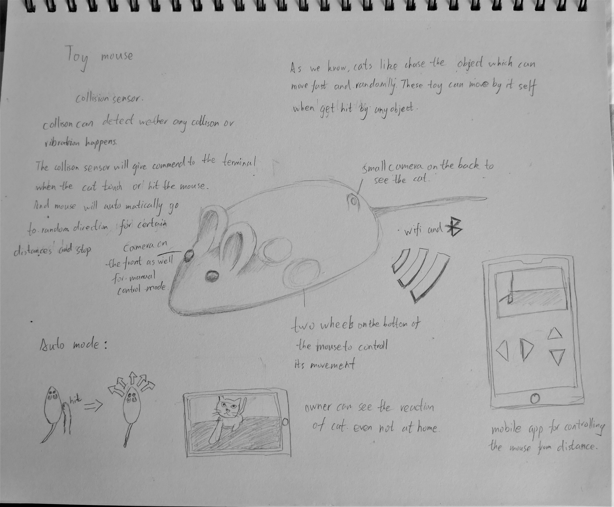

5 in 5 Project
Ian Chen
Introduction:
My 5 in 5 project mainly focus on the Cat appliances.
Many people love to keep a cat in their house nowadays. We already know that cat is mostly self-motivated animals and we don’t need to spend too much time to take care of them. But still sometimes people will face a problem:
How to take care of them when they are out of town? I think those projects can also really fit for the big breeding group like animal shelter. Those projects can save many labor for them.
Constraints:
Method:
1.Pick different appliance each day
2.Match sensor with the appliance
3.Set a standard for data analyzing
4.developing different plan for different cats by analyzing the data collected
Cat Food Bowl:

This Cat food bowl can help keeping your cat not hungry anytime. At the same time it can help controling your cat's weight. As we all know is not good for human's health if they are over weight and so do cats.
This cat bowl have resistive pressure sensor which can test out the cat's weight everytime it eat the food. I use 4 sensor in order to get a accurate data. After the system in cat bowl can analysis the cat weight and give out right
amount of food.
Cat Toilet:

Many people usually bother by their cats pee and shit on the floor in the house due to not cleaning up their toilet in time. Cat is a picky animal. If their toilet is not clean enough they won't use it. I use ultrasonic sensor
in this project for sensing the cats are using the toilet or not. And I use motor to control the griddle.
Cat Comfort House:

Cat usually like to sleep in a warm place during the winter and a cool place during summer. In this case, I combine the warm bag technique with the Cat house to create a comfort house for them to stay in all the time. The Temperature
sensor can sense the air temperature and adjust the temperature inside the house in order to create a best comfortable place for it.
Cat Collar:

The collar uses heat beat sensor and temperature sensor for keeping watch on cats' physical health. Cats usually pretend they are healthy even they have some problems which make owners hard to discover in time. This collar can scout
the unusual physical data and warn the owners at once.
Cat Toy Mouse:

This toy is made for those owners who usually leave home. It used collision sensor for moving on its own. The owners can also scout their cats from the back small camera in the toy, even they are really far from home. They can also control the mouse move by using the mobile app.